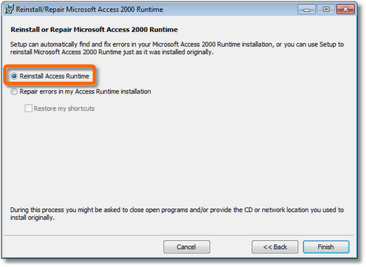

End-to-end recruitment management and information system
PRS Runtime
The PRS Runtime must be installed on every PC that runs the PRS Client application. It only needs to be installed once (no need to reinstall when upgrading the PRS Client).
When you install the PRS Client you will be automatically prompted to install the Runtime if it is not already installed, so you won’t normally need to install or reinstall the PRS Runtime manually.
Installing the PRS Runtime from the Web
-
Close the PRS if it’s currently open.
-
Open your Web browser and click this link to download the runtime installer (prs_runtime_setup.exe).
-
Double-click the downloaded prs_runtime_setup.exe file and follow the on-screen instructions.
-
When the installer opens click the Install Now button and follow the on-screen instructions.
Reinstalling the PRS Runtime
If you need to reinstall the Runtime use the same install procedures described above. The only difference is that when the installer starts you should:
-
Press the Repair Microsoft 2000 Runtime button.
-
Select the Install Access Runtime option the press the Finish button.
